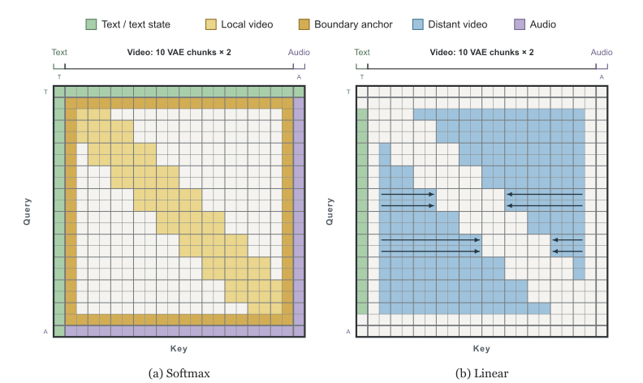

Picture an editor checking a long scene. Shots right next to the current one get compared frame by frame; everything farther away goes into a running notebook, updated once per shot after viewing the whole frame, so ten near-identical patches of sky become one note instead of ten clashing ones. The first and last shots stay pinned to the wall.
긴 장면을 검토하는 편집자를 떠올려 보자. 지금 컷 바로 옆의 컷들은 한 장씩 직접 비교한다. 더 먼 컷은 누적 노트에 적는데, 프레임 전체를 본 뒤 컷마다 한 번만 고쳐 쓴다. 그래서 거의 똑같은 하늘 패치 열 개는 서로 부딪히는 메모 열 개가 아니라 메모 하나가 된다. 첫 컷과 마지막 컷은 벽에 붙여 둔다.
How it works: split attention by distance작동 방식: 거리에 따라 어텐션을 나눈다
Each frame looks exactly at its neighbors and at the clip's two ends; everything else is read from memory. The two regions never overlap, so no frame is counted twice.
각 프레임은 이웃 프레임과 영상의 양 끝만 정확히 보고, 나머지는 메모리에서 읽는다. 두 영역은 겹치지 않아서 어떤 프레임도 두 번 세지 않는다.

- Local window and anchors stay Softmax.지역 창과 앵커는 Softmax로 둔다.Each 5-frame VAE chunk sees itself and both neighbors, plus the first and last frames. Text and audio stay Softmax.5프레임짜리 VAE 청크마다 자기 자신과 양옆 청크, 그리고 첫·마지막 프레임을 본다. 텍스트와 오디오는 Softmax 그대로다.
- Distant frames go through two scans.먼 프레임은 두 번의 스캔으로 처리한다.Forward and reverse memories each start from half the prompt's state, so the text is counted exactly once.순방향·역방향 메모리가 각각 프롬프트 상태의 절반에서 출발하므로, 텍스트는 정확히 한 번만 더해진다.
- Retrofit, then distill.기존 모델에 덧붙이고, 증류한다.Align the new branches to frozen H3 (700 steps), co-adapt with LoRA (small add-on weights, 2,000 steps), then distill 50 steps to 8.새 가지를 얼려 둔 H3에 맞추고(700스텝), LoRA(작은 추가 가중치)로 함께 적응시킨 뒤(2,000스텝), 50스텝을 8스텝으로 증류한다.
Key idea: write a whole frame at once핵심: 프레임 전체를 한 번에 쓴다
Solving all patches jointly keeps old memory from blowing up without diluting distinct patches. Plain parallel writes amplify memory when patches agree, and the usual fix shrinks every write.
모든 패치를 함께 풀면, 서로 다른 패치를 희석하지 않고도 예전 메모리가 폭주하지 않는다. 그냥 병렬로 쓰면 패치들이 같은 방향일 때 메모리가 증폭되고, 흔한 해결책은 모든 쓰기를 줄여 버린다.
Results: 119× from three stacked gains결과: 세 가지 이득을 쌓아 119배
The architecture alone gives 2.6×, and the win grows with clip length. Step distillation and 8 GPUs then multiply it to 6.70 s.
구조만으로 2.6배 빨라지고, 영상이 길수록 이득이 커진다. 여기에 스텝 증류와 GPU 8장을 곱해 6.70초가 된다.
8-step VDN-H3 scores like 50-step dense and well above 4-step FastH3. The small slips are world coherence and endpoint fidelity.
8스텝 VDN-H3는 50스텝 dense와 비슷한 점수를 내고, 4스텝 FastH3보다는 확실히 높다. 작게 밀리는 곳은 세계 일관성과 양 끝 프레임 충실도다.
| Metric지표 | VDN·8 | Dense·50 | Fast·4 |
|---|---|---|---|
| VQA-T | 89.20 | 88.20 | 75.46 |
| Q-Align | 93.13 | 92.22 | 89.18 |
| DOVER++ | 3.28 | 3.22 | 0.52 |
| Flow px | 11.71 | 11.55 | 9.19 |
| World coh. | 1.77 | 1.84 | 1.65 |
| FL2VA LPIPS ↓ | 0.116 | 0.104 | 0.183 |
When a whole frame of tokens arrives together, write it to linear memory with one least-squares solve instead of per-token or summed updates: stability comes free and distinct tokens stay sharp. Keep exact attention only at neighbors and endpoints.프레임 하나의 토큰이 한꺼번에 들어온다면, 선형 메모리에 토큰별·합산 업데이트 대신 최소제곱 풀이 한 번으로 써라. 안정성은 덤으로 얻고 서로 다른 토큰은 선명하게 남는다. 정확한 어텐션은 이웃 프레임과 양 끝에만 남겨라.
No quality ablation tests the joint solve against parallel writes or removes the anchors, so its benefit is only theoretical; evidence is one backbone, 103 prompts and automatic metrics. "Livestream" is aspirational: it still denoises whole clips, and 6.70 s excludes VAE decoding.연립 풀이를 병렬 쓰기와 비교하거나 앵커를 빼 보는 품질 ablation(구성 요소를 하나씩 빼 보는 실험)이 없어서 그 이점은 이론으로만 남는다. 근거도 백본 하나, 프롬프트 103개, 자동 지표뿐이다. 'Livestream'은 아직 목표다. 여전히 영상 전체를 한꺼번에 디노이징하고, 6.70초에는 VAE 디코딩이 빠져 있다.